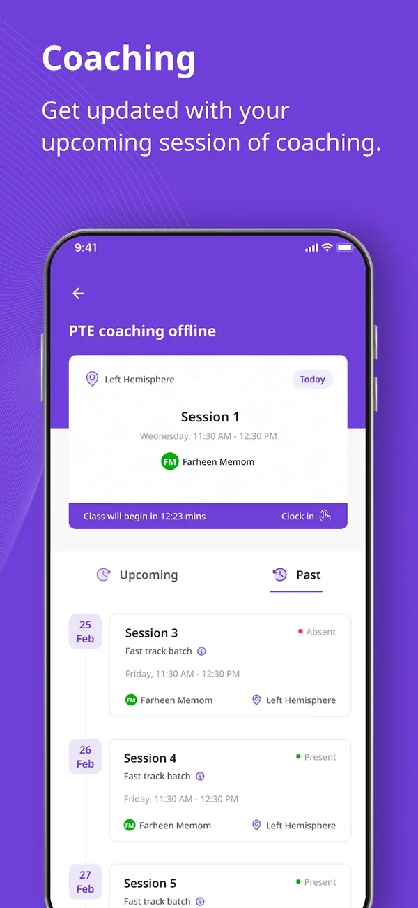
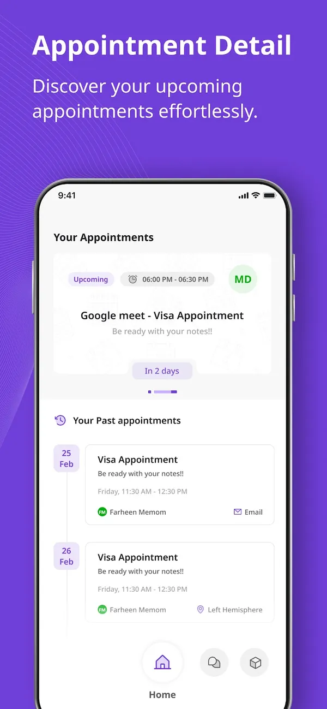
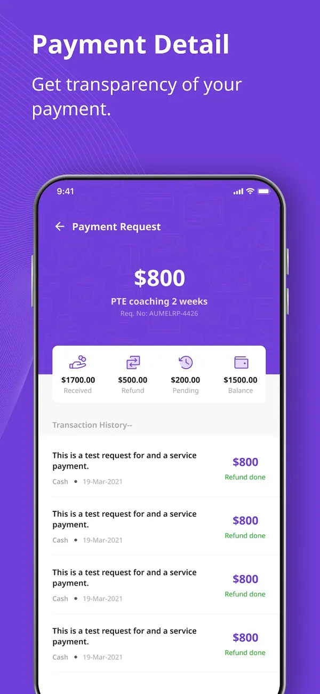

Kondesk: the document checklist.
Applicants need to know exactly which documents are still missing, and by when. I designed a due-by checklist that shows that, and checks each file as it's uploaded.
- Each document shows its state: done, waiting, or needs fixing
- A bad upload says why, like "the image is not clear, please re-upload"
- Offline-tolerant, with clear empty, error and success states

Kondesk, screen by screen.





From the Kondesk listing on Google Play.
One system for five apps.
With one designer and five apps, the system had to do a lot of the work. I built a shared design system and a motion language in Rive that all five apps used.
For handoff I made a specs and states pack, so engineering knew how each screen should look when it was empty, when something failed, and when it worked.